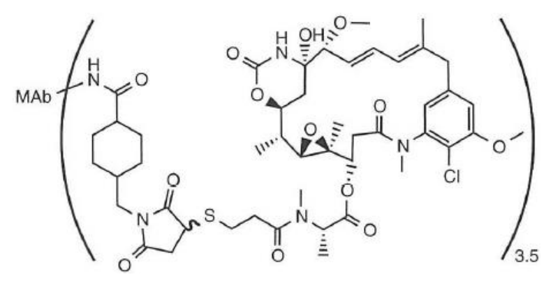
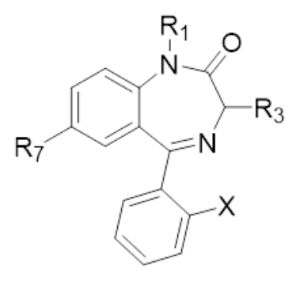
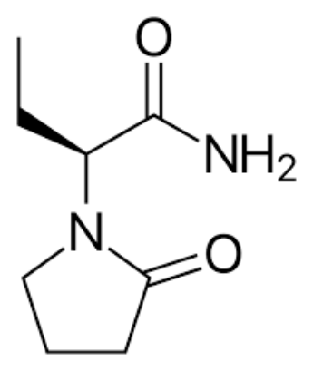
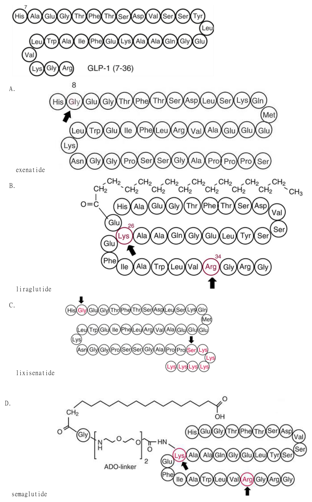
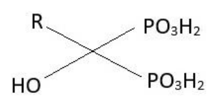
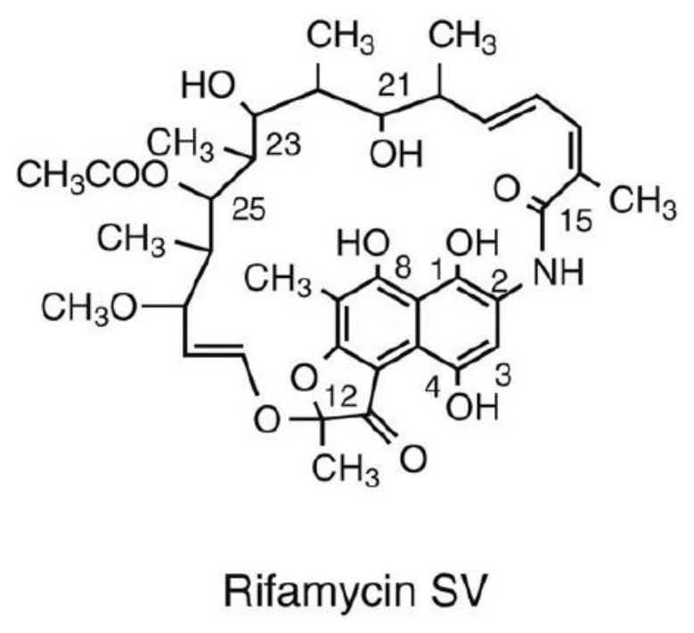

開卷有益 ／
藥師 ／ 藥理學與藥物化學 ／ 114 年第 1 次114 年第 1 次藥師藥理學與藥物化學試題與答案
這一頁是民國 114 年第 1 次藥師藥理學與藥物化學的整份歷屆試題，共 80 題，題目與標準答案出自考選部「國家考試試題及測驗式試題答案」開放資料，其中 72 題附有詳解。以下逐題列出題幹、選項與答案；要計時作答或記錄成績，請用線上練習。
考選部原始場次代碼：114020
線上作答這一科 →
全部 80 題
第 1 題 待校
人體肝臟CYP2D6 酵素在許多藥物的代謝過程扮演重要角色，依其基因型可分為超快速代謝者（ultrarapid metabolizer）及低度代謝者（poor metabolizer）兩種不同表現型，有關此兩種表現型的敘述，下列何者正 確？
（A） 以tamoxifen 治療低度代謝者之乳癌時，應降低其劑量，以免代謝物蓄積過多而中毒（B） 以nortriptyline 治療超快速代謝者之憂鬱症時，應提高劑量，以維持有效治療濃度（C） 低度代謝者服用tramadol 止痛時，應提高劑量，才能達到有效治療濃度（D） 超快速代謝者服用codeine 止痛時，應提高劑量，才能達到有效治療濃度答案：（B）
第 2 題
下列何者是atrial natriuretic peptide 的訊息傳遞路徑？
（A） guanylyl cyclase（B） tyrosine kinase（C） adenylyl cyclase（D） voltage-gated Na+ channel答案：（A）
詳解與考點 正解：atrial natriuretic peptide（ANP）結合其受體後，受體本身的 guanylyl cyclase 被活化，產生 cGMP 並傳遞訊號，因此（A）正確，故選 A。
B：tyrosine kinase 是 insulin 與多種生長因子受體常見的訊息傳遞方式，不是 ANP 受體的機制。
C：adenylyl cyclase 產生的是 cAMP，常見於 G protein-coupled receptor 訊號；ANP 的主要第二訊使者是 cGMP。
D：voltage-gated Na+ channel 參與動作電位的離子傳導，並非 ANP 結合後的受體內訊息傳遞酵素。
本題考點：受體型 guanylyl cyclase（receptor guanylyl cyclase）——遇到 ANP 時直接連結受體活化與 cGMP 生成；第二訊使者區辨（second-messenger discrimination）——以 cGMP 對應 guanylyl cyclase、以 cAMP 對應 adenylyl cyclase，避免將兩條路徑互換。
第 3 題
Vancomycin 治療腸球菌（enterococci）感染所引起之心內膜炎（endocarditis），可併用下列何者藥物來增 加抗菌作用？
（A） meropenem（B） sulfadiazine（C） gentamicin（D） sulbactam答案：（C）
詳解與考點 正解：Vancomycin 抑制腸球菌細胞壁合成後，可增加 aminoglycoside 進入菌體的機會；gentamicin 再作用於 30S ribosome 抑制蛋白質合成，形成協同殺菌作用。因此（C）是題目所問的經典併用藥物，故選 C。
A：meropenem 雖為 β-lactam 類抗生素，但不是本題要考的 vancomycin 與 aminoglycoside 協同殺菌搭配。
B：sulfadiazine 以葉酸代謝為作用位置，不能利用細胞壁受損提高進入菌體的機制產生題述協同作用。
D：sulbactam 的主要角色是抑制 β-lactamase，本身不是用來與 vancomycin 形成此種腸球菌協同殺菌效果的藥物。
本題考點：抗菌協同作用（antibacterial synergy）——一種藥先破壞細胞壁、另一種藥再進入細胞內作用時，優先判斷是否能增強殺菌；aminoglycoside 作用機轉（aminoglycoside mechanism of action）——gentamicin 結合 30S ribosome，與細胞壁抑制劑併用時可因菌體通透性改變而增強效果。
第 4 題
有關四環黴素藥物（tetracyclines）之敘述，下列何者錯誤？
（A） 抗菌機轉為抑制細菌ribosomal peptidyl transferase 的活性，使蛋白質不能合成（B） 與牛奶或含鎂或鋁制酸劑合用時，會使藥物失去抗菌活性（C） 產生抗藥性最主要的機制是細菌產生Tet efflux pump（D） 不宜8 歲以下幼童使用答案：（A）
詳解與考點 正解：四環黴素類藥物結合細菌 30S ribosome 的 A site，阻止 aminoacyl-tRNA 接入，並不是抑制 peptidyl transferase。peptidyl transferase 位於 50S ribosome，因此（A）的作用機轉錯誤，故選 A。
B：牛奶及含 Mg/Al 的制酸劑會與四環黴素螯合，降低腸胃吸收與臨床抗菌效果。看似是藥物直接失去活性，實際分辨點在生體可用率下降。
C：Tet efflux pump 將四環黴素排出菌體外，是此類藥物常見且重要的抗藥性機制。
D：四環黴素會沉積於發育中的牙齒與骨骼，故不宜用於 8 歲以下幼童。
本題考點：四環黴素作用機轉（tetracycline mechanism of action）——看到 tetracyclines 時鎖定 30S 的 aminoacyl-tRNA A site，不要誤接 50S 的 peptidyl transferase；螯合交互作用（chelation interaction）——四環黴素與 Ca2+、Mg2+、Al3+ 併用時先判斷腸胃吸收是否下降；Tet efflux pump（tetracycline efflux pump）——細菌外排藥物使細胞內濃度不足，是辨識抗藥性的常見線索。
第 5 題
Amphotericin B 與下列何者藥物併用時，具有協同殺菌作用，對隱球菌導致的腦膜炎（cryptococcal meningitis）有較佳的療效？
（A） voriconazole（B） caspofungin（C） terbinafine（D） flucytosine答案：（D）
詳解與考點 正解：Amphotericin B 與真菌細胞膜 ergosterol 結合並形成孔洞，可增加 flucytosine 進入真菌細胞；flucytosine 在細胞內轉化後干擾核酸合成，兩者形成協同殺菌作用。這是隱球菌腦膜炎的經典併用，故選 D。
A：voriconazole 抑制 ergosterol 合成，雖也是抗黴菌藥，卻不是與 Amphotericin B 併用治療隱球菌腦膜炎的經典協同組合。
B：caspofungin 抑制 β-1,3-glucan 合成；隱球菌對此作用位置的反應有限，不能取代 flucytosine 的協同角色。
C：terbinafine 抑制 squalene epoxidase，作用位置與 Amphotericin B 不同，但不是本題所問的標準協同搭配。
本題考點：Amphotericin B 作用機轉（Amphotericin B mechanism of action）——以與 ergosterol 結合、形成細胞膜孔洞辨認其直接殺菌位置；flucytosine 協同作用（flucytosine synergy）——細胞膜通透性提高時，flucytosine 更易進入真菌並抑制核酸合成；隱球菌腦膜炎治療組合（cryptococcal meningitis combination therapy）——看到題幹問 Amphotericin B 的協同併用時，優先選 flucytosine。
第 6 題
關於抗黴菌azoles 類製劑，下列何者進入腦脊髓液（cerebrospinal fluid）的效果最佳？
（A） ketoconazole（B） itraconazole（C） fluconazole（D） voriconazole答案：（C）
詳解與考點 正解：在 azoles 類製劑中，fluconazole 水溶性高、蛋白結合率低，進入腦脊髓液的濃度可接近血中濃度，因此（C）具最佳腦脊髓液穿透效果，故選 C。
A：ketoconazole 進入腦脊髓液的能力較差，不能作為中樞神經感染時的首選穿透藥。
B：itraconazole 的蛋白結合率高，腦脊髓液濃度低，與 fluconazole 的分布特性不同。
D：voriconazole 也能進入中樞神經系統，容易因其治療特定黴菌感染的角色而成為誘答；但單比較 azoles 的腦脊髓液穿透效果時，fluconazole 才是本題的最佳選項。
本題考點：fluconazole 藥物分布（fluconazole distribution）——題幹問腦脊髓液穿透時，優先連結低蛋白結合率與高水溶性的 fluconazole；血腦障壁穿透（blood-brain barrier penetration）——能進入中樞神經系統不必然代表同類藥中最佳，須比較各藥的腦脊髓液濃度。
第 7 題
關於nitrofurantoin 敘述，下列何者正確？
（A） 只對格蘭氏陰性菌有效，但是對變形桿菌（Proteus）無效（B） 治療泌尿道感染無效（C） 蠶豆症患者使用易產生溶血性貧血的副作用（D） 容易與其它抗菌劑產生交互抗藥性答案：（C）
詳解與考點 正解：nitrofurantoin 在蠶豆症患者所造成的氧化壓力是判斷關鍵。G6PD 缺乏時，紅血球維持還原型 glutathione 的能力不足；（C）nitrofurantoin 的氧化性代謝物可造成紅血球氧化損傷，因而誘發溶血性貧血，故選 C。
A：變形桿菌（Proteus）對 nitrofurantoin 常具抗性並不足以推出（A）只對格蘭氏陰性菌有效。nitrofurantoin 也對部分格蘭氏陽性泌尿道病原菌有效，錯在將其抗菌譜限縮為單一類別。
B：（B）與此藥在尿液中達有效濃度的特性相反。nitrofurantoin 是治療下泌尿道感染的常用藥物；分辨關鍵在尿路局部感染，而不是把它當作全身感染用藥。
D：（D）把抗藥性概念套錯位置。nitrofurantoin 經細菌還原後形成多重反應性中間產物、作用於多個細菌成分，通常不易與其他抗菌劑產生交互抗藥性。
本題考點：G6PD 缺乏與氧化性溶血（G6PD deficiency and oxidative hemolysis）——遇到具氧化壓力的藥物時，先判斷紅血球是否無法維持還原型 glutathione；nitrofurantoin 的泌尿道定位（urinary antiseptic）——判斷其療效時看尿液濃度與下泌尿道病原菌抗菌譜，不以全身感染的藥物分布推論。
第 8 題
下列有關抗腫瘤藥物bevacizumab 之敘述，何者正確？
（A） 為腫瘤細胞上的VEGF 受體之拮抗劑（B） 可在腫瘤切除手術後作為即時輔助治療（C） 可使用於治療轉移性大腸直腸癌（D） 易造成低血壓的副作用答案：（C）
詳解與考點 正解：bevacizumab 的治療定位取決於它中和循環中的 VEGF-A，而非阻斷腫瘤細胞受體。阻斷 VEGF 訊號可抑制腫瘤血管新生；（C）轉移性大腸直腸癌可使用 bevacizumab 作為治療的一部分，故選 C。
A：（A）將抗體的結合位置說成腫瘤細胞上的 VEGF 受體。bevacizumab 結合的是 VEGF 配體，使其無法活化血管內皮細胞上的 VEGF 受體，兩者的作用位置不同。
B：（B）忽略抗血管新生治療對傷口修復的影響。bevacizumab 可能妨礙傷口癒合，腫瘤切除手術後不應作為即時輔助治療使用。
D：（D）把此類藥物的血壓方向顛倒。VEGF 訊號受抑制常見高血壓與蛋白尿；低血壓不是其代表性不良反應。
本題考點：血管內皮生長因子抑制（VEGF inhibition）——辨認 bevacizumab 時先看它結合 VEGF 配體、間接阻斷血管新生；抗血管新生治療與傷口癒合（antiangiogenic therapy and wound healing）——遇到圍手術期情境時，需連結 VEGF 抑制對組織修復的影響。
第 9 題
有關抗凝血及止血藥物與其副作用的組合，下列何者錯誤？
（A） clopidogrel—thrombotic thrombocytopenic purpura（B） desmopressin—bleeding（C） aminocaproic acid—intravascular thrombosis（D） heparin—thrombocytopenia答案：（B）
詳解與考點 正解：題幹要找錯誤的副作用配對；desmopressin 的主要作用是增加 von Willebrand factor 與 factor VIII 的可用性以改善出血傾向，不是造成出血。（B）將 bleeding 列為其副作用，正好把治療目標當成不良反應，故選 B。
A：（A）是成立的配對。clopidogrel 的抗血小板作用雖可預防血栓，但罕見時可與 thrombotic thrombocytopenic purpura 相關。
C：（C）是成立的配對。aminocaproic acid 抑制纖維蛋白溶解，在不適當或高風險狀況下可能增加 intravascular thrombosis 的風險。
D：（D）是成立的配對。heparin 可引發 heparin-induced thrombocytopenia，血小板下降反而可能伴隨血栓形成。
本題考點：desmopressin 的止血作用（desmopressin hemostatic effect）——見到其與出血併用時，先判斷是在提高 von Willebrand factor 與 factor VIII，而非製造出血；抗凝與止血藥物的不良反應（adverse effects of hemostatic drugs）——配對題要把抗血小板、抗纖溶與 heparin 的機轉各自連到特徵性風險。
第 10 題
下列何種降血脂藥物會影響farnesoid X receptor 的作用，進而增加血中VLDL 的濃度？
（A） ezetimibe（B） alirocumab（C） fenofibrate（D） cholestyramine答案：（D）
詳解與考點 正解：膽酸螯合劑中斷腸肝循環而改變 farnesoid X receptor（FXR）訊號，是本題的判斷路徑。cholestyramine 結合腸道膽酸，使肝臟膽酸代謝與脂蛋白生成調節改變，可能使血中 VLDL 與三酸甘油酯上升；（D）符合此機轉，故選 D。
A：（A）ezetimibe 抑制小腸刷狀緣的 NPC1L1 膽固醇轉運，不是透過膽酸螯合或 FXR 訊號改變 VLDL。
B：（B）alirocumab 為 PCSK9 抑制劑，可增加肝細胞 LDL receptor 的再循環，主要降低 LDL-C，作用點不在 FXR。
C：（C）fenofibrate 活化 PPAR-α，促進脂肪酸氧化並增加 VLDL 分解，血中 VLDL 的方向與題目所述相反。
本題考點：膽酸螯合劑（bile acid sequestrants）——遇到 cholestyramine 時連結腸肝循環、膽酸訊號與可能上升的三酸甘油酯；降血脂藥物作用點（lipid-lowering drug targets）——以 NPC1L1、PCSK9、PPAR-α 與膽酸結合四個位置區分易混淆藥物。
第 11 題
有關melagatran 之抗凝血機制，下列何者正確？
（A） 抑制維他命K epoxide reductase（B） 為thrombin 抑制劑（C） 為glycoprotein IIb/IIIa 受體抑制劑（D） 抑制plasminogen 形成plasmin答案：（B）
詳解與考點 正解：melagatran 是直接阻斷凝血級聯末端關鍵酵素的藥物。它直接抑制 thrombin，因而阻止 fibrinogen 轉為 fibrin；（B）正確描述其抗凝血機制，故選 B。
A：（A）描述的是 warfarin 類藥物抑制 vitamin K epoxide reductase 的作用。melagatran 不靠降低維他命 K 依賴凝血因子的生成來抗凝。
C：（C）所述的 glycoprotein IIb/IIIa 受體抑制是抗血小板機制，阻斷的是血小板聚集的最終共同路徑，與直接抑制 thrombin 不同。
D：（D）是抑制纖維蛋白溶解的方向，會阻止 plasminogen 形成 plasmin。melagatran 作用於凝血酶，不是抗纖溶藥。
本題考點：直接凝血酶抑制劑（direct thrombin inhibitors）——看到 melagatran 時直接連到 thrombin 與 fibrin 生成，而非維他命 K 或血小板受體；止血系統作用位置（sites of action in hemostasis）——先分清凝血酶、血小板聚集與纖維蛋白溶解三個層次，再判斷藥物機轉。
第 12 題
下列何者為dopamine D2接受器之致效劑，用於高泌乳激素血症（hyperprolactinemia）的治療？
（A） cabergoline（B） atosiban（C） desmopressin（D） ganirelix答案：（A）
詳解與考點 正解：高泌乳激素血症需要以 dopamine D2 致效抑制腦下垂體泌乳素分泌。（A）cabergoline 為長效 dopamine D2 receptor agonist，可降低 prolactin，故選 A。
B：（B）atosiban 是 oxytocin receptor antagonist，主要用於抑制子宮收縮，並非 dopamine D2 致效劑。
C：（C）desmopressin 是 vasopressin V2 receptor agonist，可增進腎臟水分再吸收及部分止血反應，沒有降低 prolactin 的作用。
D：（D）ganirelix 為 GnRH antagonist，用來抑制促性腺激素高峰；受體位置與泌乳素調控不同。
本題考點：dopamine 對泌乳素的調控（dopaminergic inhibition of prolactin）——遇到高泌乳激素血症時，優先辨認 dopamine D2 agonist；下視丘—腦下垂體藥物靶點（hypothalamic-pituitary drug targets）——以 D2、oxytocin、V2 與 GnRH receptor 分開判讀生殖與內分泌用藥。
第 13 題
下列何者具有抑制腎上腺類固醇（adrenal steroid）合成作用，可用於治療嚴重性Cushing syndrome？
（A） etomidate（B） fludrocortisone（C） triamcinolone（D） bromocriptine答案：（A）
詳解與考點 正解：嚴重 Cushing syndrome 需要迅速壓低腎上腺皮質醇生成時，可利用 etomidate 對腎上腺類固醇合成酶的抑制。（A）etomidate 可抑制 11β-hydroxylase，降低 cortisol 合成，故選 A。
B：（B）fludrocortisone 是具強礦物皮質素活性的外源性類固醇，會補充而非抑制腎上腺類固醇作用。
C：（C）triamcinolone 是 glucocorticoid，屬外源性糖皮質素，並不藉由抑制腎上腺類固醇合成治療 Cushing syndrome。
D：（D）bromocriptine 是 dopamine D2 agonist，主要用於 dopamine 相關內分泌適應症；它不是直接抑制腎上腺類固醇合成的藥物。
本題考點：etomidate 與類固醇生成（etomidate inhibition of steroidogenesis）——題幹出現嚴重 hypercortisolism 時，辨認可直接抑制 cortisol 合成的藥物；Cushing syndrome 的藥物作用層次（pharmacologic control of Cushing syndrome）——分清直接抑制腎上腺合成與調節中樞內分泌受體的策略。
第 14 題
下列何者可以抑制5α-reductase 而抑制二氫睪固酮的生成，用於治療良性前列腺肥大（benign prostatic hyperplasia）？
（A） clomiphene（B） finasteride（C） fulvestrant（D） anastrozole答案：（B）
詳解與考點 正解：良性前列腺肥大所要降低的是前列腺內由 testosterone 轉成的 dihydrotestosterone（DHT）。（B）finasteride 抑制 5α-reductase，減少 DHT 形成並縮小前列腺相關刺激，故選 B。
A：（A）clomiphene 是 selective estrogen receptor modulator，藉調整下視丘—腦下垂體的雌激素回饋促進排卵，並不抑制 5α-reductase。
C：（C）fulvestrant 使 estrogen receptor 降解，作用在雌激素受體而非 testosterone 轉換酶。
D：（D）anastrozole 抑制 aromatase，阻斷 androgen 轉為 estrogen；aromatase 與產生 DHT 的 5α-reductase 是不同酵素。
本題考點：5α-reductase 抑制劑（5α-reductase inhibitors）——治療良性前列腺肥大時，看到降低 DHT 就選擇抑制 testosterone 還原步驟的藥物；性類固醇轉換酶（steroid-converting enzymes）——5α-reductase 管 androgen 到 DHT，aromatase 管 androgen 到 estrogen，須依產物方向判別。
第 15 題
下列何者為parathyroid hormone 1-34 重組蛋白，可經由皮下注射，以增加造骨效果，用於治療骨質疏鬆 症？
（A） strontium ranelate（B） pamidronate（C） doxercalciferol（D） teriparatide答案：（D）
詳解與考點 正解：題幹指定的是 parathyroid hormone 1-34 的重組片段，且要以皮下注射間歇性促進造骨。（D）teriparatide 正是 recombinant PTH 1-34，可增加骨形成而用於骨質疏鬆症，故選 D。
A：（A）strontium ranelate 是影響骨代謝的鹽類藥物，不是 recombinant PTH 1-34，也不以 PTH receptor 的間歇性致效為其身分辨識。
B：（B）pamidronate 為 bisphosphonate，抑制 osteoclast 介導的骨吸收；它是抗骨吸收而非直接造骨的策略。
C：（C）doxercalciferol 是 vitamin D 類似物，主要調節鈣磷與副甲狀腺素軸，並非 PTH 1-34 重組蛋白。
本題考點：teriparatide（recombinant PTH 1-34）——題幹同時出現 PTH 片段、皮下注射與增加造骨時，即可鎖定 teriparatide；骨質疏鬆藥物策略（osteoporosis pharmacotherapy）——先區分促骨形成藥與抑制骨吸收藥，再由作用方向判斷選項。
第 16 題
關於降血壓藥物aliskiren 的藥理作用機制及副作用之敘述，下列何者正確？
（A） 抑制renin 酵素活性，減少angiotensin I、angiotensin II 及aldosterone 產生，會導致高血鉀（B） 抑制renin 由腎臟皮質釋放，減少prorenin、angiotensin I 及angiotensin II 產生，會導致低血鉀（C） 抑制prorenin 酵素活化，減少renin、angiotensin I 及angiotensin II 產生，會導致高血鉀（D） 抑制prorenin 由腎臟皮質釋放，減少renin、angiotensin I 及angiotensin II 產生，會導致低血鉀答案：（A）
詳解與考點 正解：aliskiren 抑制 renin，不抑制 renin 釋放或 prorenin 活化。它阻止 angiotensinogen 形成 angiotensin I，連帶降低 angiotensin II 與 aldosterone；aldosterone 減少使排鉀下降，故（A）正確，故選 A。
B：（B）錯把直接 renin inhibition 說成抑制 renin 釋放，且把血鉀方向寫成低血鉀。負回饋減弱時 renin 與 prorenin 濃度可上升，但 renin activity 受到抑制。
C：（C）將作用點置於 prorenin 活化，並非 aliskiren 的主要機轉。此藥直接抑制 renin 的酵素活性，血鉀方向仍應由 aldosterone 減少推得高血鉀。
D：（D）同時誤認 aliskiren 抑制 prorenin 的腎臟釋放，並將 aldosterone 降低後的鉀離子變化顛倒為低血鉀。
本題考點：直接腎素抑制劑（direct renin inhibitor）——aliskiren 沿著 renin→angiotensin I→angiotensin II→aldosterone 的級聯判斷；腎素—血管張力素—醛固酮系統與血鉀（RAAS and potassium balance）——aldosterone 降低時，警覺鉀滯留與高血鉀。
第 17 題
使用下列何種降血壓藥物，需注意是否發生高血鉀，因嚴重時可能引發心律不整之副作用？
（A） prazosin（B） hydralazine（C） nifedipine（D） captopril答案：（D）
詳解與考點 正解：高血鉀的共同線索是 aldosterone 作用下降，使腎臟排鉀減少。（D）captopril 為 angiotensin-converting enzyme inhibitor，降低 angiotensin II 與 aldosterone，因此須注意高血鉀及其可能誘發的心律不整，故選 D。
A：（A）prazosin 阻斷 α1 receptor，代表性風險是姿勢性低血壓與首劑暈厥，不是因 aldosterone 下降造成高血鉀。
B：（B）hydralazine 直接擴張小動脈，常以反射性心搏過速、液體滯留或類 lupus 症候群作為辨識點，沒有此題的排鉀抑制機轉。
C：（C）nifedipine 阻斷 L-type calcium channel，主要不良反應為周邊水腫、潮紅或心搏過速，並非典型高血鉀藥物。
本題考點：ACE inhibitor 與高血鉀（ACE inhibitor-induced hyperkalemia）——遇到降低 angiotensin II 或 aldosterone 的降壓藥時，優先檢查血鉀；降壓藥不良反應定位（antihypertensive adverse-effect mapping）——以 α1 blockade、直接血管擴張、calcium channel blockade 與 RAAS 抑制各自的特徵風險判別。
第 18 題
長期治療心絞痛要防止血栓再發生，下列藥物及作用機制何者正確？
（A） aspirin 不可逆抑制血小板cyclooxygenase-1，不需每日服藥，每週1 劑75 mg 即可有效抑制血小板活化（B） clopidogrel 可逆抑制P2Y12 ADP receptor，服用後1～3 小時達有效血中濃度（C） nitroglycerin 會增加血小板內cGMP，可以抑制血小板活化，不需再合併使用血小板抑制劑來預防血栓再發 生（D） dipyridamole 抑制phosphodiesterase 3，除能抑制血小板活化外，亦能促進血管放鬆，只適用於穩定型心 絞痛答案：（D）
詳解與考點 正解：防止心絞痛血栓再發時，要辨認抗血小板機轉與抗心絞痛血管效應。（D）dipyridamole 抑制 phosphodiesterase 3，使血小板內 cyclic nucleotide 增加而抑制活化，並有血管放鬆作用；但它擴張的是未狹窄段的冠狀小動脈，可能造成冠狀動脈竊血（coronary steal）而使缺血區灌流變差，因此只適用於穩定型心絞痛，故選 D。
A：（A）前半段的 cyclooxygenase-1 不可逆抑制正確，但新生血小板會恢復 thromboxane A2 生成，不能推成每週 1 劑 75 mg 即足夠。
B：（B）最易與其他抗血小板藥混淆之處在於受體相同，但 clopidogrel 對 P2Y12 ADP receptor 的抑制是不可逆，且為需代謝活化的前驅藥，不是可逆直接抑制劑。
C：（C）nitroglycerin 造成的 NO—cGMP 訊號可影響血小板與血管平滑肌，但它的抗心絞痛作用不能取代長期預防血栓再發所需的血小板抑制策略。
本題考點：抗血小板藥物（antiplatelet drugs）——看 aspirin 與 clopidogrel 時，分別以 COX-1 不可逆抑制與 P2Y12 不可逆抑制判斷；dipyridamole 的雙重作用（dipyridamole pharmacology）——以 phosphodiesterase inhibition 連結抗血小板與血管放鬆，不將其與 nitrate 的抗心絞痛角色混為一談。
第 19 題
利尿劑會影響許多離子的平衡，使用下列何種利尿劑，最可能會引起低血鎂症（hypomagnesemia）？
（A） acetazolamide（B） torsemide（C） hydrochlorothiazide（D） tolvaptan答案：（B）
詳解與考點 正解：低血鎂最應聯想到亨利氏環粗上行支的鹽類重吸收被強力抑制。（B）torsemide 是 loop diuretic，阻斷 Na+/K+/2Cl- cotransporter，增加鎂離子排泄，因此最可能造成 hypomagnesemia，故選 B。
A：（A）acetazolamide 抑制近端小管 carbonic anhydrase，較具代表性的變化是 bicarbonate 流失與代謝性酸中毒，並非本題所問最典型的鎂流失機轉。
C：（C）hydrochlorothiazide 也可能影響鎂平衡，因而看似接近；但它阻斷遠曲小管 Na+/Cl- cotransporter，鎂流失的典型性與強度不及 loop diuretic。
D：（D）tolvaptan 拮抗 vasopressin V2 receptor，主要造成 aquaresis，即較多自由水排出，而不是直接阻斷鎂再吸收的鹽類轉運子。
本題考點：loop diuretics 與低血鎂（loop diuretic-induced hypomagnesemia）——遇到 Na+/K+/2Cl- cotransporter 抑制時，要一併想到鎂與鈣排泄增加；利尿劑作用部位（nephron site of diuretic action）——先把近端小管、亨利氏環、遠曲小管與集合管的靶點分開，再推電解質變化。
第 20 題
關於利尿劑indapamide 之作用位置與機制，下列敘述何者正確？
（A） 抑制亨利氏環（loop of Henle）中Na+/K+/2Cl - cotransporter（B） 抑制亨利氏環（loop of Henle）中Na+/Cl- cotransporter（C） 抑制遠曲小管（distal convoluted tubule）中Na +/K +/2Cl - cotransporter（D） 抑制遠曲小管（distal convoluted tubule）中Na +/Cl - cotransporter答案：（D）
詳解與考點 正解：indapamide 是 thiazide-like diuretic，關鍵是其作用部位為遠曲小管。（D）它抑制 distal convoluted tubule 的 Na+/Cl- cotransporter，降低鈉與氯的再吸收，故選 D。
A、C：（A）將 Na+/K+/2Cl- cotransporter 放在亨利氏環、（C）則放在遠曲小管，但兩者都把 loop diuretic 的轉運子錯套給 indapamide。Na+/K+/2Cl- cotransporter 的代表性位置是亨利氏環粗上行支，不是 indapamide 的靶點。
B：（B）雖列出 Na+/Cl- cotransporter，卻錯置於亨利氏環。分辨關鍵在轉運子與腎元部位要成對：遠曲小管才是 thiazide 與 indapamide 的位置。
本題考點：thiazide-like diuretics（indapamide）——題幹出現 indapamide 時，固定配對遠曲小管 Na+/Cl- cotransporter；loop diuretics（loop diuretics）——只有亨利氏環粗上行支的 Na+/K+/2Cl- cotransporter 被抑制時，才是 loop diuretic 的典型機轉。
第 21 題
Adenosine 能有效地抑制paroxysmal supraventricular tachycardia，下列敘述何者最適當？
（A） 半衰期≦10 秒，活化內向整流鉀離子通道及抑制鈣離子通道，而抑制房室結傳導（B） 半衰期≦10 秒，活化外向整流鉀離子通道及抑制鈉離子通道，而抑制房室結傳導（C） 半衰期1 小時，活化外向整流鉀離子通道及抑制鈣離子通道，而抑制竇房結自發性節律（D） 半衰期1 小時，活化內向整流鉀離子通道及抑制鈉離子通道，而抑制竇房結至房室結的傳導答案：（A）
詳解與考點 正解：Adenosine 終止 paroxysmal supraventricular tachycardia 的關鍵在短暫而強烈地抑制房室結傳導。它的半衰期極短，約不超過 10 秒，並活化內向整流鉀離子通道、抑制鈣離子通道，使房室結過極化且傳導變慢；（A）完整符合，故選 A。
B：（B）雖同樣寫到極短半衰期與房室結抑制，但把主要離子通道說成外向整流鉀離子通道與鈉離子通道。房室結的急性抑制重點是內向整流鉀離子通道活化與鈣離子通道抑制。
C、D：（C）與（D）都把半衰期寫成 1 小時，且將主要作用說成抑制竇房結節律或竇房結至房室結的傳導。Adenosine 的臨床用途正仰賴其極短半衰期及對房室結的選擇性抑制；兩者另分別錯列外向整流鉀離子通道或鈉離子通道。
本題考點：adenosine 的房室結作用（adenosine AV nodal blockade）——遇到 PSVT 時，辨認短半衰期與房室結傳導暫時受抑的組合；心臟節律藥的離子通道判讀（cardiac ion-channel pharmacology）——房室結去極化主要依賴鈣離子通道，故抑制鈣電流可降低傳導。
第 22 題
下列何者為propranolol 抗心絞痛的藥理作用？
（A） 抑制運動引發的心跳過快（B） 增加心肌收縮的作用（C） 擴張冠狀循環的血管平滑肌（D） 降低前負荷（preload）答案：（A）
詳解與考點 正解：propranolol 緩解心絞痛不是靠擴張冠狀動脈，而是降低心肌耗氧。β receptor blockade 可限制運動時的心跳加快，並降低收縮力；（A）因此能減少運動誘發的心肌氧需求，故選 A。
B：（B）將 β blocker 對收縮力的方向顛倒。propranolol 降低心肌收縮力與心率，正是其抗心絞痛而非正性肌力的基礎。
C：（C）把 nitrate 或直接血管擴張劑的冠狀血管平滑肌作用套給 propranolol。它沒有以直接擴張冠狀動脈作為主要抗心絞痛機轉。
D：（D）降低前負荷主要是 venodilator 的效果，例如 nitrate。propranolol 的核心是降低心率、收縮力與血壓所構成的心肌耗氧需求。
本題考點：β blocker 的抗心絞痛作用（beta-blocker antianginal effect）——遇到 propranolol 時，從降低 heart rate 與 contractility 推得心肌耗氧下降；抗心絞痛藥物比較（antianginal drug comparison）——nitrate 以降低 preload 為主，β blocker 以限制運動性心搏過速為主。
第 23 題
下列何者是α2 adrenergic agonist，且主要用途是使重症監護情況（intensive care circumstances）病 人產生鎮靜作用？
（A） betaxolol（B） dexmedetomidine（C） midodrine（D） formoterol答案：（B）
詳解與考點 正解：在重症監護情境需要鎮靜時，具有中樞 α2 adrenergic agonism 的藥物是辨識重點。（B）dexmedetomidine 活化 α2 receptor，可提供鎮靜作用，故選 B。
A：（A）betaxolol 是以 β1 receptor blockade 為主的 β adrenergic blocker，並非 α2 agonist，也不是此題所述的鎮靜藥。
C：（C）midodrine 是 α1 adrenergic agonist，用於提高周邊血管張力以改善姿勢性低血壓；α1 與中樞 α2 的用途不同。
D：（D）formoterol 是長效 β2 adrenergic agonist，主要支氣管擴張，用途是氣道疾病控制而非 ICU 鎮靜。
本題考點：dexmedetomidine（α2 adrenergic agonist）——題幹同時出現 ICU 鎮靜與 α2 receptor 時，可直接辨認 dexmedetomidine；adrenergic receptor selectivity（adrenergic receptor selectivity）——α1 連結血管收縮、β2 連結支氣管擴張、β1 連結心臟作用，須先由受體定位用途。
第 24 題
下列β adrenergic blocker 中，何者具有部分致效劑活性（partial agonist activity）？
（A） acebutolol（B） atenolol（C） betaxolol（D） bisoprolol答案：（A）
詳解與考點 正解：β adrenergic blocker 中的 partial agonist activity 又稱 intrinsic sympathomimetic activity（ISA）。（A）acebutolol 具有 ISA，能在低交感神經張力時保留部分 β receptor 刺激，故選 A。
B：（B）atenolol 雖偏向 β1-selective blocker，但不以 partial agonist activity 為特徵；受體選擇性不能取代 ISA 的判準。
C：（C）betaxolol 也是較選擇性 β1 blocker，常見於心血管與眼科用途，但無本題所問的 ISA。
D：（D）bisoprolol 為 β1-selective blocker，沒有 acebutolol 所具的 partial agonist activity。
本題考點：內在交感神經活性（intrinsic sympathomimetic activity）——題目問 β blocker 的 partial agonism 時，以 ISA 辨認 acebutolol；β1 選擇性與 ISA（β1 selectivity versus ISA）——兩者是獨立特性，不能因藥物偏向 β1 就推定具有 partial agonist activity。
第 25 題
下列藥物中，何者可以快速反轉固醇類神經肌肉阻斷劑（steroid neuromuscular blocking drugs） rocuronium 及vecuronium 肌肉鬆弛的藥效？
（A） sugammadex（B） diazepam（C） dantrolene（D） physostigmine答案：（A）
詳解與考點 正解：rocuronium 與 vecuronium 都是 steroid neuromuscular blocker，快速反轉須降低游離濃度。（A）sugammadex 選擇性包覆兩藥，使神經肌肉傳導恢復，故選 A。
B：（B）diazepam 作用於 GABAA receptor，不能移除阻斷劑。
C：（C）dantrolene 抑制骨骼肌 sarcoplasmic reticulum 鈣離子釋放，用於惡性高熱，並不反轉競爭性神經肌肉阻斷。
D：（D）physostigmine 是 acetylcholinesterase inhibitor，增加 acetylcholine 而非選擇性包覆 rocuronium 或 vecuronium，故非快速反轉藥。
本題考點：sugammadex（selective relaxant binding agent）——遇 rocuronium 或 vecuronium 快速反轉時，選擇包覆 steroidal neuromuscular blocker 的藥物；神經肌肉阻斷反轉策略（neuromuscular blockade reversal）——區分 acetylcholinesterase inhibition 與藥物包覆，前者增加 acetylcholine，後者降低游離阻斷劑。
第 26 題
下列氣喘治療藥物中，何者是IgG4 人類單株抗體，可拮抗 IL-4α受體，也常用於異位性皮膚炎？
（A） dupilumab（B） omalizumab（C） mepolizumab（D） benralizumab答案：（A）
詳解與考點 正解：氣喘與異位性皮膚炎共同的 type 2 inflammation 訊號提供判準。（A）dupilumab 是 IgG4 human monoclonal antibody，阻斷 IL-4 receptor α，因而抑制 IL-4 與 IL-13 訊號，故選 A。
B：（B）omalizumab 結合 IgE，降低 IgE 介導的過敏反應；它不阻斷 IL-4α receptor。
C：（C）mepolizumab 結合 IL-5，降低 eosinophil 存活與活化，不是 IL-4 或 IL-13 的共同受體次單元。
D：（D）benralizumab 針對 IL-5 receptor α，促進 eosinophil depletion；受體位置與 dupilumab 不同。
本題考點：dupilumab 與 IL-4 receptor α（dupilumab and IL-4Rα blockade）——題幹同時出現異位性皮膚炎、氣喘與 IL-4α receptor 時，鎖定 dupilumab；type 2 inflammation biologics（type 2 inflammation biologics）——以 anti-IgE、anti-IL-5、anti-IL-5Rα 與 anti-IL-4Rα 的標的區分各生物製劑。
第 27 題
下列何種藥物較不會引起便秘之副作用？
（A） misoprostol（B） ondansetron（C） sucralfate（D） aluminum containing antacids答案：（A）
詳解與考點 正解：關鍵在各藥對腸道蠕動的方向。（A）misoprostol 是 PGE1 類似物，常見腸胃道不良反應為腹瀉與腹痛，並非便秘；相較其他選項較不會造成便秘，故選 A。
B：ondansetron 阻斷腸道的 5-HT3 受體後可減少腸蠕動，便秘是其常見不良反應之一。
C：sucralfate 含鋁複合物，會使腸道蠕動減慢，臨床上可見便秘。
D：aluminum containing antacids 的鋁鹽容易造成腸蠕動下降；分辨制酸劑的腸胃道不良反應時，鋁偏向便秘。
本題考點：前列腺素 E1 類似物（PGE1 analog）——遇到 misoprostol 的腸胃道不良反應時，優先判為腹瀉而非便秘；5-HT3 受體拮抗劑（5-HT3 receptor antagonist）——止吐同時抑制腸蠕動時，要留意便秘。
第 28 題
下列何者不是前列腺素引起的作用？
（A） 調節腎小管鹽分的吸收（B） 眼壓上升（C） 引產（initiation of labor）（D） 引起動脈導管開放（patency of ductus arteriosus）答案：（B）
詳解與考點 正解：判準是辨認前列腺素在不同器官的生理方向。前列腺素類在眼部可促進房水外流，前列腺素類似物可用來降低眼壓，因此（B）眼壓上升不是前列腺素引起的作用，故選 B。
A：前列腺素參與腎血流與腎小管鈉鹽處理的調節，故調節腎小管鹽分吸收屬其作用範圍。
C：PGE 類可促進子宮頸成熟與子宮收縮，故可用於引產。
D：PGE1 類藥物可維持動脈導管開放，這是處理特定先天性心臟病新生兒時的重要作用。
本題考點：前列腺素眼科作用（prostaglandin ocular effect）——看到前列腺素類似物時，以增加房水外流、降低眼壓判斷；前列腺素生殖作用（prostaglandin reproductive effect）——需促進子宮頸成熟或子宮收縮時，考慮 PGE 類作用方向；動脈導管開放（ductus arteriosus patency）——維持開放要聯想到 PGE1，而非促使閉合。
第 29 題
下列那一種組織胺受體拮抗劑對睡眠失調、肥胖、嗜睡病（narcolepsy）、認知失調及精神失調均具有改善 作用？
（A） H1受體拮抗劑（B） H2受體拮抗劑（C） H3受體拮抗劑（D） H4受體拮抗劑答案：（C）
詳解與考點 正解：本題所列的嗜睡病、認知與精神症狀都指向中樞組織胺調節。（C）H3 受體拮抗劑解除突觸前 H3 自體受體對組織胺釋放的抑制，可增進覺醒與認知功能，因此可改善嗜睡病等中樞症狀，故選 C。
A：H1 受體拮抗劑常進入中樞造成鎮靜與嗜睡，並可能增加食慾或體重，方向與促進覺醒不符。
B：H2 受體拮抗劑的主要應用是抑制胃酸分泌，不能用來概括改善題幹所列的中樞症狀。
D：H4 受體主要分布於免疫細胞並參與發炎與趨化；分辨 H3 與 H4 時，前者偏中樞覺醒調節，後者偏免疫發炎。
本題考點：H3 受體（histamine H3 receptor）——遇到嗜睡病或促進覺醒的線索時，判向突觸前組織胺釋放調節；H1 受體拮抗劑（histamine H1 receptor antagonist）——中樞穿透的藥物多以鎮靜為特徵，不可和 H3 拮抗的覺醒效果混淆。
第 30 題
Suvorexant 可作用於食慾激素受體（orexin receptor），已被美國FDA 核准用於治療入睡困難型失眠症 （sleep-onset insomnia），其最常見的副作用為何？
（A） 反彈性失眠（rebound insomnia）（B） 煩躁不安等宿醉效應（hangover effect）（C） 次日早晨思睡作用（next-day somnolence）（D） 長期使用易導致食慾增加答案：（C）
詳解與考點 正解：食慾激素是維持清醒的重要中樞訊號，suvorexant 阻斷 orexin receptor 後雖有助入睡，也會留下日間嗜睡的藥效延續。（C）次日早晨思睡作用是其最常見的不良反應，故選 C。
A：反彈性失眠是停用部分鎮靜安眠藥後較受重視的現象，並非 suvorexant 最常見的不良反應。
B：煩躁不安等宿醉效應可讓人聯想到安眠藥的殘留不適，但 suvorexant 最具代表性的殘留表現是嗜睡，而非煩躁不安。
D：orexin 與食慾調節有關不等於長期阻斷必然造成食慾增加；本題要辨認的是常見且直接的次日嗜睡。
本題考點：食慾激素受體拮抗劑（orexin receptor antagonist）——以抑制覺醒訊號幫助入睡時，要從藥理延伸判斷次日嗜睡；失眠藥殘留效應（residual hypnotic effect）——比較安眠藥不良反應時，區分特定常見表現與停藥後的反彈現象。
第 31 題
下列那一個治療癲癇（epilepsy）的藥物也可用於預防偏頭痛（migraine）？
（A） tiagabine（B） topiramate（C） lacosamide（D） ethosuximide答案：（B）
詳解與考點 正解：本題要找同時具有抗癲癇與偏頭痛預防適應症的藥物。（B）topiramate 可用於癲癇治療，也可降低偏頭痛發作頻率，故選 B。
A：tiagabine 抑制 GABA 回收以治療局部發作癲癇，並非偏頭痛預防的代表藥物。
C：lacosamide 增強電壓依賴性鈉離子通道的慢性失活，主要用於癲癇發作控制，不以偏頭痛預防為用途。
D：ethosuximide 阻斷 T 型鈣離子通道，專長是失神性發作；分辨各抗癲癇藥時，特定發作型控制不等於具有偏頭痛預防效果。
本題考點：topiramate（topiramate）——題幹同時出現癲癇與偏頭痛預防時，優先聯想到此交叉適應症；抗癲癇藥適應症區分（antiseizure drug indications）——先以發作型與非癲癇適應症分流，不以都能抗癲癇就互相替代。
第 32 題
下列何者可以產生焦慮解除（anxiolysis）及順向失憶症（anterograde amnesia），最適合用於手術前給藥 （premedication）？
（A） modafinil（B） midazolam（C） ketamine（D） desipramine答案：（B）
詳解與考點 正解：術前給藥要同時降低焦慮並留下順向失憶。（B）midazolam 是短效 benzodiazepine，經由增強 GABAA 受體抑制作用產生 anxiolysis 與 anterograde amnesia，最符合術前 premedication 的目的，故選 B。
A：modafinil 是促進清醒的藥物，用於嗜睡相關疾患，作用方向和術前鎮靜相反。
C：ketamine 可造成解離性麻醉與失憶，但其精神感受改變與甦醒期反應使它不是本題所問的典型術前焦慮解除藥。
D：desipramine 是三環抗憂鬱劑，主要抑制 norepinephrine 回收，不能提供術前所需的即時順向失憶。
本題考點：midazolam（midazolam）——術前需要焦慮解除加順向失憶時，選短效 benzodiazepine；順向失憶（anterograde amnesia）——判斷術前用藥時，重點是阻斷給藥後新記憶形成，不是單純使人嗜睡。
第 33 題
最低肺泡濃度（minimal alveolar concentration）可用以評估下列那個藥物使病人達到麻醉狀態所需的藥 量？
（A） propofol（B） sevoflurane（C） midazolam（D） etomidate答案：（B）
詳解與考點 正解：最低肺泡濃度以肺泡末端濃度表示吸入麻醉劑的效價，只適用於揮發性吸入藥。（B）sevoflurane 是吸入性麻醉劑，可用 minimal alveolar concentration 評估達到麻醉狀態所需的濃度，故選 B。
A：propofol 以靜脈注射給藥，麻醉深度不以肺泡濃度表示。
C：midazolam 是 benzodiazepine，通常以靜脈或口服等途徑使用，沒有可量測的吸入性 MAC。
D：etomidate 為靜脈麻醉誘導藥；分辨 MAC 的關鍵在於是否為可經肺泡平衡的揮發性吸入麻醉劑。
本題考點：最低肺泡濃度（minimal alveolar concentration，MAC）——比較揮發性吸入麻醉劑效價時，以 MAC 作判準；吸入與靜脈麻醉劑（inhalational versus intravenous anesthetics）——題幹給肺泡濃度指標時，先排除靜脈給藥藥物。
第 34 題
進行腸道切除手術後，若選用嗎啡（morphine）作為術後止痛，可能造成病人出現腸阻塞情形，下列何者最 不適合用於改善此術後不良反應？
（A） naloxegol（B） alvimopan（C） naldemedine（D） naltrexone答案：（D）
詳解與考點 正解：嗎啡造成術後腸阻塞的核心是腸道 μ-opioid receptor 受刺激，改善時應盡量只解除周邊作用而保留止痛。（D）naltrexone 可進入中樞並拮抗嗎啡的止痛作用，還可能引發戒斷反應，因此最不適合，故選 D。
A：naloxegol 是周邊作用的 μ-opioid receptor 拮抗劑，可針對腸道的 opioid-induced constipation，較能避免完全抵消中樞止痛。
B：alvimopan 專門用於加速腸道切除後腸胃功能恢復，是術後腸麻痺情境的對應藥物。
C：naldemedine 同為周邊作用的 μ-opioid receptor 拮抗劑，機轉上可減少腸道 opioid 作用而盡量保留止痛。
本題考點：周邊作用 μ-opioid receptor 拮抗劑（peripherally acting μ-opioid receptor antagonist）——處理 opioid-induced constipation 時，優先選擇限制於周邊的拮抗作用；中樞 opioid 拮抗劑（central opioid antagonist）——若仍需維持止痛，避免使用會一併抵消中樞 analgesia 的藥物。
第 35 題
下列那一種抗憂鬱症藥物較不容易引起體重增加的副作用？
（A） bupropion（B） mirtazapine（C） imipramine（D） tranylcypromine答案：（A）
詳解與考點 正解：比較抗憂鬱劑的體重影響時，要找相對不促進食慾與體重增加的藥物。（A）bupropion 作用於 norepinephrine 與 dopamine 回收，通常較具體重中性或減重傾向，故選 A。
B：mirtazapine 的抗組織胺作用常使食慾上升與體重增加，是最具誘答性的相反組合。
C：imipramine 為三環抗憂鬱劑，抗組織胺與抗膽鹼作用均可能伴隨體重增加。
D：tranylcypromine 是 MAO inhibitor，並不以體重中性為其辨識特徵，治療過程仍可能出現體重增加。
本題考點：bupropion（bupropion）——須避開體重增加傾向時，可由 norepinephrine/dopamine 回收抑制的特徵辨認；mirtazapine 體重效應（mirtazapine weight gain）——看到食慾增加與嗜睡的組合時，優先聯想到抗組織胺相關的體重增加。
第 36 題
若產生相近的止痛作用，下列那一種鴉片類藥物所需的劑量最小？
（A） morphine（B） codeine（C） fentanyl（D） pentazocine答案：（C）
詳解與考點 正解：在相近止痛效果下，所需劑量最小代表相對效價最高。（C）fentanyl 的 opioid analgesic potency 顯著高於嗎啡，因此達到相近止痛所需劑量最小，故選 C。
A：morphine 是臨床比較 opioid analgesic potency 的常用基準，但所需劑量不會小於 fentanyl。
B：codeine 的止痛效力較弱，且部分效果仰賴代謝為 morphine，不符合小劑量即可達到相近止痛。
D：pentazocine 是混合型 agonist-antagonist，止痛效果有天花板限制；分辨效價時，不能只因同屬鴉片類就和 fentanyl 視為相同。
本題考點：鴉片類止痛效價（opioid analgesic potency）——題幹以相近效果比較劑量時，劑量愈小代表效價愈高；fentanyl（fentanyl）——在常見鴉片類藥物中，看到極高效價與小劑量需求時優先辨認此藥。
第 37 題
有關ethylene glycol 中毒時，可使用下列何種藥物抑制alcohol dehydrogenase，使毒性代謝物無法產 生？
（A） disulfiram（B） acamprosate（C） fomepizole（D） oxazepam答案：（C）
詳解與考點 正解：ethylene glycol 的毒性來自 alcohol dehydrogenase 代謝後形成的酸性代謝物，因此治療要先封鎖這個酵素。（C）fomepizole 直接抑制 alcohol dehydrogenase，可阻止毒性代謝物產生，故選 C。
A：disulfiram 抑制的是 aldehyde dehydrogenase，用於造成酒精代謝產物累積，不能阻斷 ethylene glycol 的第一步氧化。
B：acamprosate 用於酒精使用疾患的維持治療，主要調節 glutamate 與 GABA 訊號，並非 alcohol dehydrogenase 抑制劑。
D：oxazepam 是 benzodiazepine，可用於酒精戒斷相關焦慮或癲癇發作處置，無法阻止 ethylene glycol 的毒性代謝。
本題考點：fomepizole（fomepizole）——毒醇中毒題出現 alcohol dehydrogenase 時，選能在代謝源頭攔截的藥物；ethylene glycol 中毒（ethylene glycol poisoning）——判斷毒性時要看代謝物而非原物質，先阻斷其形成。
第 38 題
下列何種中草藥可經由抑制5α-reductase 減少dihydrotestosterone 產生，具有改善攝護腺肥大（benign prostatic hyperplasia）之作用？
（A） saw palmetto（B） milk thistle（C） St. John's wort（D） ginseng答案：（A）
詳解與考點 正解：題幹直接指定 5α-reductase 抑制與 dihydrotestosterone 減少，應連結到改善攝護腺肥大的草藥。（A）saw palmetto 具有抑制 5α-reductase、減少 dihydrotestosterone 形成的機轉，故選 A。
B：milk thistle 的代表成分 silymarin 常與肝臟保護用途相連，並非以抑制 5α-reductase 改善攝護腺肥大。
C：St. John's wort 常用於憂鬱症相關症狀，且會影響多種藥物代謝；其辨識重點不是 dihydrotestosterone。
D：ginseng 多以補養或抗疲勞用途辨認，沒有本題所問的 5α-reductase 抑制特徵。
本題考點：5α-reductase（5α-reductase）——題幹出現 dihydrotestosterone 減少與攝護腺肥大時，從睪固酮轉換步驟判斷；saw palmetto（saw palmetto）——草藥題以特定酵素與作用器官配對，不以一般保健用途猜測。
第 39 題
關於deferoxamine 的敘述，下列何者錯誤？
（A） 可用於治療鐵中毒（B） 可以口服而產生療效（C） 快速靜脈注射，可能引起低血壓（D） 配合血液透析，可用於治療鋁中毒答案：（B）
詳解與考點 正解：本題採負向判斷，重點是 deferoxamine 的給藥途徑。（B）deferoxamine 不能可靠地口服吸收以產生療效，治療時須以腸胃道外途徑給藥，因此此敘述錯誤，故選 B。
A：deferoxamine 能螯合鐵，可用於急性鐵中毒，故此敘述正確而非答案。
C：快速靜脈注射 deferoxamine 可能造成低血壓，故給藥速度需避免過快；此敘述正確。
D：deferoxamine 亦可螯合鋁，配合血液透析可協助移除鋁複合物，故此敘述正確。
本題考點：deferoxamine（deferoxamine）——看到急性鐵中毒時，辨認其螯合用途與腸胃道外給藥；螯合治療（chelation therapy）——判斷重金屬處置時，同時確認螯合對象與複合物排除方式。
第 40 題
下列有關adeno-associated virus vector 作基因轉殖（gene transfer）之敘述，何者正確？
（A） 容易生產（ease of production）（B） 短時間表達（transient expression）（C） 轉殖的基因片段大小有限制（limited insert size）（D） 只能轉殖至分裂細胞（transfer to dividing cells only）答案：（C）
詳解與考點 正解：adeno-associated virus vector 的重要限制是可攜帶的外源基因片段很小。（C）轉殖的基因片段大小有限制，是 AAV vector 的正確特徵，故選 C。
A：AAV vector 的製備與大量生產並不特別容易，生產複雜度不是其優勢。
B：AAV vector 在非分裂細胞可維持相對長期的基因表達，不能以 transient expression 作為其代表特性。
D：AAV vector 可轉殖分裂與非分裂細胞；分辨病毒載體時，要把細胞週期依賴性與載量限制分開判讀。
本題考點：AAV 載體（adeno-associated virus vector）——設計基因轉殖時，先確認目標基因是否受載量上限限制；病毒載體轉殖細胞（viral vector tropism）——比較載體時，分別檢查可轉殖的細胞狀態與基因表達持續時間。
第 41 題 待校
Somatostatin（結構如下圖）屬環肽，第7～10 號胺基酸為其必要序列，其半衰期短於3 分鐘，致應用受 限。下列何種結構變化，使半衰期增長至約100 分鐘？
答案：（C）
第 42 題
(-)-Ephedrine 與(-)-pseudoephedrine 在結構上的差異稱為：
（A） enantiomer（B） diastereomer（C） bioisostere（D） tautomer答案：（B）
詳解與考點 正解：兩者都有相同的連接方式與兩個手性中心，但 (-)-ephedrine 與 (-)-pseudoephedrine 只在其中一個手性中心構型不同，並非彼此鏡像。（B）diastereomer 符合這種非鏡像立體異構關係，故選 B。
A：enantiomer 必須是所有對應手性中心皆相反的非重疊鏡像，和本題只差一個手性中心不同。
C：bioisostere 是以具有相近物理化學或生物作用的基團替換為概念，不是在描述同一分子的立體構型關係。
D：tautomer 是質子位置與雙鍵位置互換形成的平衡異構物，與手性中心構型無關。
本題考點：非對映異構物（diastereomer）——多個手性中心中只部分構型改變時，判為 diastereomer；對映異構物（enantiomer）——所有對應手性中心完全相反且互為鏡像時，才判為 enantiomer。
第 43 題
Ado-trastuzumab emtansine（結構如下圖），屬抗體偶聯藥物（ADC），其連接子（linker）為：

（A） protease-sensitive valine-citrulline linker（B） acid-sensitive hydrazone linker（C） glutathione-sensitive disulfide linker（D） N-maleimidomethylcyclohexane-1-carboxylate linker答案：（D）
詳解與考點 正解：Ado-trastuzumab emtansine 是將 trastuzumab 與 DM1 以非可裂解硫醚連接子偶聯的 ADC。（D）N-maleimidomethylcyclohexane-1-carboxylate linker，也就是 SMCC 類連接子，符合其結構特徵，故選 D。
A：protease-sensitive valine-citrulline linker 需經蛋白酶切割釋放載荷，屬另一類可裂解 ADC 連接策略。
B：acid-sensitive hydrazone linker 利用酸性環境水解，並非 Ado-trastuzumab emtansine 所用的非可裂解硫醚。
C：glutathione-sensitive disulfide linker 依賴還原環境斷裂；分辨 ADC linker 時，要區分還原可裂解二硫鍵與穩定硫醚鍵。
本題考點：抗體偶聯藥物（antibody-drug conjugate，ADC）——辨認 ADC 時，將抗體、細胞毒載荷與 linker 分開配對；SMCC 連接子（SMCC linker）——看到 Ado-trastuzumab emtansine 時，判為非可裂解的硫醚連接策略。
第 44 題
下列常見有機鹼，何種質子化（protonation）後的pKa 介於5～6？
（A） alkylamine（B） imine（C） guanidine（D） aromatic amine答案：（D）
詳解與考點 正解：判斷含氮鹼的質子化 pKa，要看孤電子對是否能參與共振而降低鹼性。（D）aromatic amine 的孤電子對可與芳香環共軛，鹼性明顯下降；以 aniline 為錨點，其共軛酸 pKa 約 4.6，帶供電子取代基或 N-烷基化時可升至 5 上下，是四類含氮鹼中唯一落在 5～6 附近者，故選 D。
A：alkylamine 的孤電子對不受芳香共振明顯離域，通常是較強鹼，其共軛酸 pKa 高於本題範圍。
B：imine 的質子化 pKa 會隨取代基與共軛程度改變，一般簡單 imine 的共軛酸 pKa 約在 7 上下，高於本題所問區間，不能以 5～6 作為本題所問的代表範圍。
C：guanidine 的質子化產物可由多個氮原子共振穩定，是很強的有機鹼，共軛酸 pKa 遠高於 5～6。
本題考點：芳香胺鹼性（aromatic amine basicity）——孤電子對與芳香環共軛時，鹼性下降，從較低的共軛酸 pKa 判斷；胍基鹼性（guanidine basicity）——質子化產物可廣泛共振穩定時，判為強鹼而非弱鹼。
第 45 題
下列具有N-H 基團的結構中，何者的酸性最強？
（A） amine（B） amide（C） guanidine（D） imide答案：（D）
詳解與考點 正解：含 N-H 基團的酸性要比較去質子化後陰離子的穩定度。（D）imide 去質子化後的負電荷可由相鄰兩個羰基共振離域，陰離子最穩定，因此酸性最強，故選 D。
A：amine 去除 N-H 質子後形成的陰離子缺乏共振與吸電子基穩定，酸性很弱。
B：amide 雖有一個羰基可參與共振，但穩定去質子化陰離子的能力不如具有兩個羰基的 imide。
C：guanidine 的共振穩定主要使其質子化陽離子成為強鹼，並不使 N-H 去質子化後形成特別穩定的陰離子。
本題考點：imide 酸性（imide acidity）——比較 N-H 酸性時，負電荷能離域到愈多羰基者愈酸；共軛鹼穩定性（conjugate-base stabilization）——選最強酸時，直接比較去質子化後陰離子的共振與誘導穩定。
第 46 題
下列何者不具有幾何異構物（geometric isomer）？
（A） CF2CF2（B） CHFCHF（C） CHFC(CH3)H（D） C(CH3)FCHF答案：（A）
詳解與考點 正解：幾何異構物成立的條件是雙鍵兩端的碳各自帶有兩個不同的取代基。CF2=CF2 的兩個碳各自帶的兩個取代基都是 F、F，彼此相同，交換位置不會產生新的異構物，因此不具幾何異構物，故選 A。
B：CHF=CHF 的每個碳都帶 H 與 F 兩個不同取代基，順、反排列會產生不同的異構物，具幾何異構物。
C：CHF=C(CH3)H 的兩個碳分別帶 H/F 與 CH3/H，取代基彼此不同，具幾何異構物。
D：C(CH3)F=CHF 的兩個碳分別帶 CH3/F 與 H/F，取代基彼此不同，具幾何異構物。
本題考點：幾何異構物的判準——雙鍵兩端的碳各自所接的兩個取代基必須互不相同，才可能有順、反排列；若某一碳上的兩個取代基彼此相同，該分子就不具幾何異構物，這是本題唯一與其餘三者不同之處。
第 47 題
下列短效的局部麻醉劑，何者具methyl ester 基團，常於牙科使用？
（A） mepivacaine（B） lidocaine（C） prilocaine（D） articaine答案：（D）
詳解與考點 正解：題幹的 methyl ester 基團與牙科常用是辨識 articaine 的組合。（D）articaine 除具有局部麻醉所需的 amide 結構外，還在 thiophene carboxylate 帶有 methyl ester，故選 D。
A：mepivacaine 是 amide 類局部麻醉劑，沒有本題所問的 methyl ester 結構。
B：lidocaine 的代表結構是 amide 類連接，並非含 methyl ester 的牙科用選項。
C：prilocaine 同樣屬 amide 類局部麻醉劑；分辨此類藥物時，不能只因都用於局部麻醉就忽略 ester 基團差異。
本題考點：articaine（articaine）——牙科局部麻醉題出現 thiophene 與 methyl ester 時，優先辨認 articaine；局部麻醉劑結構分類（local anesthetic structural classification）——比較藥物時，同時看主要 amide 或 ester 連接與是否另含特殊酯基。
第 48 題
Triptan 類抗偏頭痛藥之結構，皆具有下列何種雜環？
（A） isoxazole（B） imidazole（C） indole（D） pyrrole答案：（C）
詳解與考點 正解：Triptan 類藥物模仿 serotonin 的結構藥效團，與 5-HT1B/1D 受體作用的共同雜環是（C）indole；各品項的側鏈可不同，但這個雙環核心一致，故選 C。
A：isoxazole 是含氧、氮的五員雜環，並非 Triptan 類藥物共同保留的核心骨架。
B：imidazole 含兩個環上氮原子，與 serotonin 衍生之 Triptan 類所共有的 indole 結構不同。
D：pyrrole 容易與 indole 混淆，因為 indole 的一部分確實是 pyrrole；但題目問的是完整共通雜環，必須連同融合的苯環辨識為 indole。
本題考點：indole 結構（indole scaffold）——看到 Triptan 與 serotonin 的結構關係時，先找苯環與 pyrrole 融合的 indole 核心；結構藥效團（pharmacophore）——同類藥物側鏈可變，辨識共同作用骨架時優先看保留的關鍵雜環。
第 49 題
下列何種HMG-CoA 還原酶抑制劑是前驅藥？
（A） pravastatin（B） rosuvastatin（C） pitavastatin（D） simvastatin答案：（D）
詳解與考點 正解：判斷 HMG-CoA 還原酶抑制劑是否為前驅藥，要看給藥時是否已是能直接抑制酵素的 β-hydroxy acid。（D）simvastatin 為內酯型前驅藥，須經水解開環成活性的羥基酸型，故選 D。
A：pravastatin 給藥時已是活性的羥基酸型，不需先以內酯開環活化。
B：rosuvastatin 也是直接具有抑制 HMG-CoA 還原酶活性的羥基酸型藥物，不是前驅藥。
C：pitavastatin 以活性酸型發揮作用；分辨關鍵在是否保有內酯遮蔽的羥基酸，而不是同屬 statin 類。
本題考點：statin 前驅藥（statin prodrug）——看到內酯型結構時，判斷是否須水解成 β-hydroxy acid 才能抑制 HMG-CoA reductase；前驅藥活化（prodrug activation）——藥效取決於體內轉為活性型的步驟時，不可把給藥型態直接當作活性型。
第 50 題
下列何種opioid 拮抗劑因無法穿透血腦屏障，可用於治療opioid-induced 便秘？
（A） naloxone（B） loperamide（C） alvimopan（D） naltrexone答案：（C）
詳解與考點 正解：關鍵在於同時具備周邊 μ-opioid receptor 拮抗與難以穿透血腦屏障兩個條件。（C）alvimopan 是周邊作用的 μ-opioid receptor antagonist，可減少 opioid 對腸道蠕動的抑制而不以中樞拮抗為主，故選 C。
A：naloxone 可迅速進入中樞並拮抗 opioid 的中樞作用，主要用於反轉 opioid 過量，並非以周邊限制穿透為設計重點。
B：loperamide 雖因外排作用而主要留在周邊，卻是 μ-opioid receptor 致效劑，會降低腸蠕動，作用方向與治療 opioid-induced 便秘相反。
D：naltrexone 是可作用於中樞的 opioid receptor 拮抗劑，用途在抑制 opioid 的中樞效應，不能以周邊選擇性來判定。
本題考點：周邊作用 opioid 拮抗劑（peripherally acting μ-opioid receptor antagonist）——處理 opioid 相關腸道低蠕動時，選擇周邊拮抗而中樞穿透受限的藥物；血腦屏障穿透（blood-brain barrier penetration）——同為 receptor antagonist 時，是否進入中樞會決定能否保留或反轉中樞 opioid 效應。
第 51 題
Benzodiazepines 結構通式如下圖，下列何者之R3不是OH 取代基？

（A） clonazepam（B） loraezepam（C） oxazepam（D） temazepam答案：（A）
詳解與考點 正解：Benzodiazepine 的 3-hydroxy 衍生物可由 R3 的 OH 辨識；（A）clonazepam 的 R3 為 H，其特徵取代基是苯環 7 位的 nitro（—NO2）與 5 位苯基的 2'-chloro，因此 3 位不具 3-hydroxyl、R3 不是 OH，代謝上須先經肝臟 nitro 還原與乙醯化，而不像 lorazepam、oxazepam、temazepam 可直接進行 glucuronidation，故選 A。
B：lorazepam 屬 3-hydroxy benzodiazepine，R3 帶有 OH；此類結構也常與直接 glucuronidation 的代謝特性連結。
C：oxazepam 同樣具有 3-hydroxyl，不能作為 R3 非 OH 的例外。
D：temazepam 的 R3 亦為 OH；其與其他 benzodiazepine 的差異不能改變這個判別點。
本題考點：3-hydroxy benzodiazepines——比較 benzodiazepine 取代基時，先看 R3 是否為 OH，再連結其較容易直接進行 glucuronidation 的特性；結構—代謝關係（structure-metabolism relationship）——同類藥物的環上 OH 常會改變代謝路徑，不能只憑名稱判斷。
第 52 題
體內大部分的GABAA受體結構，共由幾個次單元（subunits）組成？
（A） 3（B） 4（C） 5（D） 6答案：（C）
詳解與考點 正解：GABAA 受體是配體閘控氯離子通道，整體由五個次單元組成 pentamer。常見組合可含 α、β、γ 等不同次型，但（C）總數固定為 5，故選 C。
A：3 個次單元不足以形成 GABAA 受體的典型五聚體通道結構。
B：4 個次單元不是 GABAA 受體的組裝數目；它不是四聚體受體。
D：6 個次單元也不符合此受體的五聚體架構，不能因次型多樣而把總次單元數增加。
本題考點：GABAA 受體（GABAA receptor）——判斷抑制性配體閘控通道的結構時，GABAA 以五聚體為準；Cys-loop ligand-gated ion channel——遇到 α、β、γ 次單元組合時，先分辨不同的是次型，不是整體次單元總數。
第 53 題
將levetiracetam（結構如下圖）之pyrrolidone 環導入何種取代基，可得brivaracetam？

（A） methyl（B） ethyl（C） propyl（D） butyl答案：（C）
詳解與考點 正解：brivaracetam 是由 levetiracetam 的 pyrrolidone 環導入（C）propyl 取代基所得的類似物，關鍵是三個碳的側鏈長度，故選 C。
A：methyl 僅有一個碳，無法形成 brivaracetam 所需的 propyl 側鏈。
B：ethyl 有兩個碳，與題目所問的三碳取代基不同。
D：butyl 雖同為直鏈烷基，但有四個碳；同系物的碳數不同即是不同結構，不可視為 propyl。
本題考點：結構類似物（structural analogue）——比較同系列藥物時，先逐一核對環上取代基的碳數與位置；同系取代基（homologous substituent）——methyl、ethyl、propyl、butyl 的差別在碳鏈長度，藥物命名與結構辨識不可互換。
第 54 題
Chlorpromazine 經下列何種代謝反應，而失去抗精神疾症活性？
（A） N-mono-demethylation（B） N,N-di-demethylation（C） aromatic hydroxylation（D） sulfoxidation答案：（D）
詳解與考點 正解：（D）chlorpromazine 的 phenothiazine 硫原子經 sulfoxidation 形成 sulfoxide 代謝物後，會失去抗精神病活性；判準是氧化位置在含硫核心，而非側鏈去甲基化，故選 D。
A：N-mono-demethylation 是胺基側鏈的去烷基化，可形成 N-desmethyl 代謝物，並未把 phenothiazine 的硫氧化為 sulfoxide。
B：N,N-di-demethylation 仍屬胺基側鏈的去烷基化反應，與本題所對應的硫氧化失活途徑不同。
C：aromatic hydroxylation 發生於芳香環，沒有形成以硫氧化為特徵的 chlorpromazine sulfoxide。
本題考點：phenothiazine 代謝（phenothiazine metabolism）——遇到含硫三環骨架時，要分開判斷側鏈 N-dealkylation 與核心 sulfoxidation；代謝性失活（metabolic inactivation）——若代謝改變了維持活性的關鍵雜原子電子性，應優先檢視是否形成失活代謝物。
第 55 題
下列有關benzisoxazole 與benzisothiazole 類抗精神疾症藥結構的敘述，何者錯誤？
（A） 此類藥物設計，源自兼具選擇性D2與5-HT2A受體阻斷之構想（B） paliperidone 含benzisothiazole 結構（C） paliperidone 的結構僅與risperidone 相差一個OH 基（D） ziprasidone 對於5-HT、dopamine 與histamine 等受體，均具親和力答案：（B）
詳解與考點 正解：本題採負向問法，（B）paliperidone 為 risperidone 的 9-hydroxy 代謝物，仍保有 benzisoxazole 骨架，不是 benzisothiazole；此敘述錯誤，故選 B。
A：兼顧 D2 與 5-HT2A 受體阻斷是此類非典型抗精神病藥的設計概念，此敘述正確，故非答案。
C：paliperidone 與 risperidone 僅差一個 OH，即 9-hydroxyrisperidone 所示的關係，此敘述正確，故非答案。
D：ziprasidone 對 serotonin、dopamine 與 histamine 等受體具有親和力；題目不是問各受體作用強度，此敘述正確，故非答案。
本題考點：benzisoxazole 與 benzisothiazole——判別非典型抗精神病藥時，先看雙環雜原子是 O 或 S，paliperidone 歸於 benzisoxazole；活性代謝物（active metabolite）——母藥多一個 hydroxyl 所得代謝物時，先檢查核心骨架是否仍相同；非典型抗精神病藥受體譜（atypical antipsychotic receptor profile）——看到 D2 與 5-HT2A 時，判斷雙重受體作用是否為設計主軸。
第 56 題
下列何者經肝代謝後，可產生amphetamine？
（A） fenfluramine（B） selegiline（C） phenelzine（D） carbidopa答案：（B）
詳解與考點 正解：（B）selegiline 在肝臟經代謝可形成 L-methamphetamine 與 L-amphetamine，因此是選項中能產生 amphetamine 的藥物，故選 B。
A：fenfluramine 的主要代謝關係是形成 norfenfluramine，保留其含氟取代結構，並非形成 amphetamine。
C：phenelzine 是 hydrazine 類 monoamine oxidase inhibitor，其代謝不會產生 amphetamine 骨架。
D：carbidopa 是周邊 DOPA decarboxylase inhibitor，結構與代謝途徑都不屬 amphetamine 前驅物。
本題考點：selegiline 代謝（selegiline metabolism）——判斷藥物是否可形成 amphetamine 類代謝物時，先辨識 selegiline 的 N-dealkylation 途徑；monoamine oxidase inhibitor——同為 MAO 抑制劑時，須再用結構與代謝物區分是否具有 amphetamine 相關代謝物。
第 57 題 待校
下列何者不是μ-antagonist？
答案：（C）
第 58 題
下列何種降血脂藥物之結構屬polycationic 聚合物，可與bile acids 結合？
（A） colestipol（B） ezetimibe（C） alirocumab（D） niacin答案：（A）
詳解與考點 正解：能與 bile acids 結合的降血脂藥需在腸道以多個正電荷進行陰離子交換。（A）colestipol 是 polycationic 聚合物，可吸附帶負電的 bile acids 並阻斷其腸肝循環，故選 A。
B：ezetimibe 是抑制腸道 sterol 吸收的小分子藥物，不是可進行陰離子交換的聚合物。
C：alirocumab 是針對 PCSK9 的單株抗體，降低 LDL 的方式不是直接結合 bile acids。
D：niacin 為小分子維生素衍生物，其調脂作用不依賴 polycationic 樹脂吸附 bile acids。
本題考點：膽酸螯合劑（bile acid sequestrant）——看到帶正電的高分子時，判斷其是否能在腸道結合帶負電的 bile acids；腸肝循環（enterohepatic circulation）——若藥物阻止 bile acids 回收，肝臟須消耗 cholesterol 再合成 bile acids，因而有助降低 LDL。
第 59 題
下列有關sodium nitroprusside 之敘述，何者錯誤？
（A） 結構中具有二價鐵（B） 結構中具有5 個CN 官能基團（C） 製劑溶液呈紅棕色時，表示已失去活性（D） 代謝產生的NO 具有降壓作用答案：（C）
詳解與考點 正解：Sodium nitroprusside 新鮮配製的溶液本身即帶有淡淡的棕色調，這屬正常現象；真正代表明顯分解、須棄用的變化是溶液出現較深的藍色、暗棕色或綠色，把「呈紅棕色」直接等同於「已失去活性」高估了單純淡棕色調的意義，敘述不精確，故選 C。
A：其結構為 Na2[Fe(CN)5NO]，中心金屬為二價鐵（Fe2+），敘述正確。
B：結構中確實含有 5 個 CN 官能基團，與 1 個 NO 基團配位在鐵中心周圍，敘述正確。
D：藥品代謝釋出的 NO 是活化 guanylate cyclase、造成血管平滑肌鬆弛的關鍵中間產物，具降壓作用，敘述正確。
本題考點：sodium nitroprusside 之結構與穩定性判斷——中心為二價鐵配位 5 個 CN 與 1 個 NO；溶液變色與活性喪失的關係——輕微棕色調屬正常，需明顯轉為深藍、暗棕或綠色才代表顯著分解，不可簡化為任何棕色調都代表失效。
第 60 題 待校
下列何者為amiodarone 的主要活性代謝物？
答案：（A）
第 61 題
下列何種利尿劑是經由抑制Na +/K+/2 Cl - symporter 而發揮作用？
（A） furosemide（B） triamterene（C） acetazolamide（D） hydrochlorothiazide答案：（A）
詳解與考點 正解：腎臟粗上行支的 Na+/K+/2 Cl− symporter 為 loop diuretic 的作用位置。（A）furosemide 阻斷此轉運體，降低鈉、鉀與氯的再吸收，故選 A。
B：triamterene 作用於集合管上皮鈉通道 ENaC，屬保鉀利尿劑，不抑制 Na+/K+/2 Cl− symporter。
C：acetazolamide 抑制近端腎小管 carbonic anhydrase，主要影響 bicarbonate 再吸收，作用位置不同。
D：hydrochlorothiazide 抑制遠曲小管的 Na+/Cl− cotransporter；兩者都影響鈉再吸收，但轉運體與腎段不同。
本題考點：loop diuretic——看到 Na+/K+/2 Cl− symporter 時，直接連結粗上行支與 furosemide；腎小管轉運體定位（renal transporter localization）——同是利尿劑時，要以作用腎段與 transporter 區分，而非只記排鈉效果。
第 62 題
下列何種抗血小板凝集藥物為Arg-Gly-Asp（RGD）loop 類似物，可作用在GPⅡb/Ⅲa 受體？
（A） tirofiban（B） prasugrel（C） eptifibatide（D） cilostazol答案：（A）
詳解與考點 正解：RGD loop 是 fibrinogen 與血小板 glycoprotein IIb/IIIa 受體結合的重要辨識序列。（A）tirofiban 為非肽類 RGD 類似物，可競爭阻斷這個受體，故選 A。
B：prasugrel 經活化後不可逆抑制 P2Y12 receptor，作用在 ADP 訊號而非 glycoprotein IIb/IIIa。
C：eptifibatide 也是 glycoprotein IIb/IIIa 拮抗劑，因而很像正解；但它是以 KGD 序列為特徵的環狀肽類似物，不是題目指定的 RGD loop 類似物。
D：cilostazol 抑制 phosphodiesterase 3 以提高血小板 cAMP，並非直接模仿 RGD 序列阻斷受體。
本題考點：glycoprotein IIb/IIIa antagonist——題目指定 RGD 類似物時，選擇直接阻斷 fibrinogen 最終結合步驟的藥物；RGD mimic——同樣抑制血小板聚集時，須分開序列類似物、P2Y12 blockade 與 phosphodiesterase inhibition 的作用位置。
第 63 題
下列有關evolocumab 之敘述，何者正確？
（A） 屬單株抗體藥（B） 可增加HDL 生成（C） 主要副作用為橫紋肌溶解症（D） 作用標的為sterol transporter答案：（A）
詳解與考點 正解：（A）evolocumab 是針對 PCSK9 的單株抗體。它阻止 PCSK9 促進 LDL receptor 降解，使肝臟可保留更多 LDL receptor 清除 LDL，故選 A。
B：evolocumab 的主要作用不是增加 HDL 生成，而是提高 LDL receptor 的回收與 LDL 清除。
C：橫紋肌溶解症是需優先聯想到 statin 的嚴重肌肉不良反應，並非 evolocumab 的主要不良反應。
D：sterol transporter 是 ezetimibe 等藥物相關的作用概念；evolocumab 的直接標的是 PCSK9，不是 transporter。
本題考點：PCSK9 monoclonal antibody——看到 evolocumab 時，判斷其以結合 PCSK9 保護 LDL receptor，而不是直接抑制 cholesterol 合成；LDL receptor recycling——降 LDL 的機轉若是減少 receptor 降解，結果是肝臟 LDL 清除增加；單株抗體標的辨識（monoclonal antibody target）——以藥名與標的配對時，要區分 PCSK9、HMG-CoA reductase 與 sterol transporter。
第 64 題 待校
下列何者為irreversible aromatase inhibitor？
答案：（B）
第 65 題
GLP-1（7-36）的肽序列如下圖，半衰期僅為1～2 分鐘。下列analogues（重要修飾如標記）何者之半衰期 最長？

（A） exenatide（B） liraglutide（C） lixisenatide（D） semaglutide答案：（D）
詳解與考點 正解：比較 GLP-1 analogues 的半衰期時，要同時看是否抗 DPP-4 分解及是否藉脂肪酸側鏈增強 albumin 結合。（D）semaglutide 以 Aib 取代第 8 位 alanine 阻斷 DPP-4 切位，又以 C18 二酸經 spacer 接上的脂肪酸側鏈強化 albumin 結合，兩項修飾疊加使半衰期達約 7 天（每週給藥一次），明顯長於 exenatide 的約 2.4 小時（每日二次）、lixisenatide 的約 3 小時（每日一次）與 liraglutide 的約 13 小時（每日一次），四者中半衰期最長，故選 D。
A：exenatide 可抗 DPP-4 分解，但缺少 semaglutide 所具的長效 albumin 結合設計，因此不是最長。
B：liraglutide 也利用脂肪酸側鏈延長作用，容易看似符合長效條件；但其持續時間仍短於 semaglutide。
C：lixisenatide 為 exendin-4 類似物，雖經修飾改善藥效表現，仍不具 semaglutide 的最長半衰期。
本題考點：GLP-1 analogue half-life——比較同類肽藥物時，同時檢查 DPP-4 resistance 與 albumin binding 的修飾；脂肪酸醯化（fatty-acid acylation）——肽鏈接上可促進 albumin 結合的脂肪酸側鏈時，通常可延長體內循環時間。
第 66 題
雙膦酸鹽藥zoledronic acid（結構如下圖），其中R 為何種取代基？

（A） aminopropyl（B） N,N-dimethylaminoethyl（C） (imidazo-1-yl)methyl（D） (pyridin-3-yl)methyl答案：（C）
詳解與考點 正解：zoledronic acid 的含氮側鏈以 imidazole 環為特徵，R 為（C）(imidazo-1-yl)methyl，因此須辨識出 imidazole 而非僅看是否含氮，故選 C。
A：aminopropyl 是開鏈胺基烷基，沒有 imidazole 的五員含氮芳香環。
B：N,N-dimethylaminoethyl 為三級胺側鏈，雖含氮，卻不是 imidazole 環取代基。
D：(pyridin-3-yl)methyl 含 pyridine 六員環；兩者皆為含氮雜環，但環大小與氮原子排列不同。
本題考點：含氮雙膦酸鹽（nitrogen-containing bisphosphonate）——辨識 zoledronic acid 時，先看 R 側鏈的 imidazole 環；雜環辨識（heterocycle identification）——遇到含氮取代基時，須按環大小、雜原子數與位置區分 imidazole、pyridine 與開鏈胺基。
第 67 題
Ospemifene 是下列何者產生之活性代謝物？
（A） raloxifene（B） toremifene（C） tamoxifen（D） bazedoxifene答案：（B）
詳解與考點 正解：（B）ospemifene 是 toremifene 經 hydroxylation 形成的活性代謝物；兩者同屬選擇性雌激素受體調節劑的代謝關係，故選 B。
A：raloxifene 的代謝不會形成 ospemifene，不能因同為 SERM 而互相替代。
C：tamoxifen 確有具活性的 hydroxylated metabolite，這點容易與題目混淆；但其代表性活性代謝物為 4-hydroxytamoxifen 與 endoxifen，不是 ospemifene。
D：bazedoxifene 是另一個 SERM，並非 toremifene 的母藥或 ospemifene 的來源。
本題考點：選擇性雌激素受體調節劑（selective estrogen receptor modulator）——同為 SERM 時，須再以母藥—代謝物配對判斷，不能只按藥理類別作答；活性代謝物（active metabolite）——遇到 hydroxylated 代謝物時，先確認其母藥名稱與結構關係。
第 68 題 待校
下列何種藥物的口服生體可用率最佳？
答案：（C）
第 69 題
下列有關indomethacin 之敘述，何者錯誤？
（A） 其抗炎活性比asprin 強（B） 其indole 結構上的氮並非必要（C） 其酸基的pKa 約為4.5（D） 其amide 的構形以trans-like form 的抗炎活性較佳答案：（D）
詳解與考點 正解：本題找錯誤敘述。（D）indomethacin 的 amide 構形若稱 trans-like form 的抗發炎活性較佳即屬顛倒；較佳者為 cis-like form，故選 D。
A：indomethacin 的抗發炎效力高於 aspirin，此敘述正確，故非答案。
B：indole 結構上的氮不是不可取代的活性必要條件；結構—活性關係中可改變此位置而保留重要的 arylacetic acid 特徵，此敘述正確，故非答案。
C：其 carboxylic acid 的 pKa 約為 4.5，符合此 acidic NSAID 的結構特性，此敘述正確，故非答案。
本題考點：indomethacin 構型—活性關係（conformation-activity relationship）——比較 amide 的 cis-like 與 trans-like 構形時，依生物活性較佳的 cis-like form 判斷；酸性 NSAID（acidic NSAID）——看到 arylacetic acid 時，將 carboxylic acid 的酸性與 COX 結合所需的陰離子型連結。
第 70 題 待校
下列何者為Z-sulindac 之結構？
答案：（C）
第 71 題 待校
抗真菌藥naftifine（結構如下圖），其作用機制為抑制ergosterol 生合成路徑的那個階段？
答案：（A）
第 72 題
下列何種antifolate 抗菌劑，可抑制dihydrofolate reductase，且對人體細胞毒性較低？
（A） methotrexate（B） sulfacetamide（C） sulfamethoxazole（D） trimethoprim答案：（D）
詳解與考點 正解：抗菌 antifolate 中，（D）trimethoprim 對細菌 dihydrofolate reductase 的選擇性高於人體酵素，因此可抑制 DHFR 而相對降低人體細胞毒性，故選 D。
A：methotrexate 也抑制 DHFR，但主要用於抑制哺乳類細胞葉酸代謝，細胞毒性較高，不符合題目的細菌選擇性。
B：sulfacetamide 是 sulfonamide 類，抑制的是 dihydropteroate synthase，不是 DHFR。
C：sulfamethoxazole 同樣抑制 dihydropteroate synthase；它常與 trimethoprim 合用，但兩者的葉酸途徑作用位置不同。
本題考點：細菌葉酸途徑（bacterial folate pathway）——看到 trimethoprim 時，配對細菌 DHFR；sulfonamide target——看到 sulfacetamide 或 sulfamethoxazole 時，配對 dihydropteroate synthase，而不是 DHFR；選擇性毒性（selective toxicity）——比較抗菌劑與抗腫瘤 antifolate 時，先看其對細菌與人體酵素的選擇性差異。
第 73 題
下列何種抗真菌藥可同時抑制14α-demethylase（CYP51）與CYP3A4，易造成嚴重藥物交互作用？
（A） butenafine（B） ketoconazole（C） micafungin（D） undecylenic acid答案：（B）
詳解與考點 正解：（B）ketoconazole 為 azole 類抗真菌藥，可抑制真菌 sterol 生成所需的 14α-demethylase（CYP51），同時明顯抑制 CYP3A4，因此容易產生嚴重藥物交互作用，故選 B。
A：butenafine 的主要抗真菌標的是 squalene epoxidase，不是 CYP51，也不以 CYP3A4 抑制為其典型交互作用來源。
C：micafungin 為 echinocandin 類，抑制 1,3-β-D-glucan synthase 以破壞細胞壁，作用位置不同。
D：undecylenic acid 為局部使用的抗真菌成分，不具 ketoconazole 的 CYP51 與 CYP3A4 雙重抑制特徵。
本題考點：azole antifungal——看到 14α-demethylase 或 CYP51 時，連結 azole 類對 ergosterol 生合成的抑制；CYP3A4 inhibition——比較 azole 類時，若同時強烈抑制 CYP3A4，應優先警覺交互作用風險；真菌細胞壁與細胞膜標的——echinocandin 抑制 glucan synthase，azole 抑制 ergosterol 路徑，兩者不可混用。
第 74 題
下列有關HIV fusion 抑制劑enfuvirtide 結構的寡肽序列源自：
（A） HIV 的醣蛋白分子gp41（B） T-lymphocyte 表面的醣蛋白分子CD4（C） HIV 的醣蛋白分子gp41 之編碼序列（D） T-lymphocyte 表面的醣蛋白分子CD4 之編碼序列答案：（A）
詳解與考點 正解：enfuvirtide 是模擬 HIV gp41 heptad-repeat 區域設計的寡肽，會在病毒與宿主細胞膜融合前結合 gp41 的中間構型，阻斷六螺旋束形成；其寡肽序列因此源自（A）HIV 的醣蛋白分子 gp41，故選 A。
B：（B）T-lymphocyte 表面的醣蛋白分子 CD4 是 HIV gp120 的宿主受體，參與病毒附著，並不是 enfuvirtide 的肽序列來源。
C：（C）gp41 的編碼序列是核酸層次的資訊；題目問的是藥物結構中的寡肽序列，判斷應回到 gp41 蛋白質本身的一級結構。
D：（D）CD4 的編碼序列同時混淆了宿主受體與核酸序列兩個層次，均不符合 enfuvirtide 模擬 gp41 的設計。
本題考點：HIV 融合抑制劑（HIV fusion inhibitor）——看到 enfuvirtide 時，先連到 gp41 的膜融合步驟，不要連到宿主 CD4；肽類藥物的序列來源（peptide sequence origin）——問寡肽結構時，區分蛋白質一級結構與其 DNA 編碼序列。
第 75 題
下列何種抗結核藥， 其結構可與M. tuberculosis之ATP synthase 結合，最適合用於治療MDR-TB ?
（A） bedaquiline（B） capreomycin（C） ethionamide（D） streptomycin答案：（A）
詳解與考點 正解：題幹同時給出 MDR-TB 與結合 Mycobacterium tuberculosis ATP synthase 的線索；（A）bedaquiline 是 diarylquinoline 類藥物，直接抑制分枝桿菌 ATP synthase，使能量生成受阻，故選 A。
B：（B）capreomycin 的主要作用是干擾分枝桿菌蛋白質合成，並非結合 ATP synthase 的藥物。
C：（C）ethionamide 經活化後影響 InhA 與分枝菌酸合成，作用標的是細胞壁脂質生合成，不是能量代謝酵素。
D：（D）streptomycin 為 aminoglycoside，主要結合細菌核糖體而抑制蛋白質合成；分辨關鍵在核糖體與 ATP synthase 是不同作用位置。
本題考點：bedaquiline——遇到 MDR-TB 且題幹點出 ATP synthase 時，直接辨識此藥；抗結核藥作用標的（antitubercular drug targets）——以能量代謝、細胞壁合成及核糖體三條路徑區分同為抗結核藥的誘答。
第 76 題
蛋白酶抑制劑lopinavir 併用低劑量ritonavir 之主要目的為：
（A） 達到synergistic 效果（B） 增加lopinavir 之安定性（C） 減緩lopinavir 之代謝（D） 增加lopinavir 之吸收答案：（C）
詳解與考點 正解：低劑量 ritonavir 在此主要扮演 pharmacokinetic enhancer；它強力抑制 CYP3A，使（C）lopinavir 的代謝清除變慢、血中濃度與作用時間提高，故選 C。
A：（A）兩者同為蛋白酶抑制劑，看似可增加抗病毒作用，但低劑量 ritonavir 的主要用途是增強 lopinavir 的藥動學暴露，而非追求直接協同抗病毒效果。
B：（B）ritonavir 不會把 lopinavir 的化學結構變得較安定；本題的濃度提升來自代謝受抑制，不是製劑或分子安定性改變。
D：（D）吸收不是此併用的主要目的。分辨關鍵在 ritonavir 抑制腸肝 CYP3A 代謝，與增加藥物自腸道進入體循環的吸收率不同。
本題考點：藥動學增強劑（pharmacokinetic enhancer）——低劑量 ritonavir 併用時，先判斷是否藉 CYP3A 抑制降低併用藥清除；蛋白酶抑制劑（protease inhibitor）——同類藥併用要區分直接抗病毒效果與用來提高暴露量的 booster 角色。
第 77 題
下列何種抗癌藥需併用dexrazoxane 以降低其心臟毒性？
（A） cisplatin（B） cyclophosphamide（C） epirubicin（D） methotrexate答案：（C）
詳解與考點 正解：dexrazoxane 用於降低 anthracycline 類藥物的累積性心臟毒性；（C）epirubicin 屬 anthracycline，dexrazoxane 可藉鐵離子螯合等保護作用減少心肌傷害，故選 C。
A：（A）cisplatin 的主要劑量限制毒性偏向腎毒性，臨床防護重點是補液等腎臟保護措施，不是 dexrazoxane。
B：（B）cyclophosphamide 可造成出血性膀胱炎，與其尿中代謝物相關；mesna 才是針對此毒性的保護藥。
D：（D）methotrexate 的毒性處置重點為 leucovorin rescue 與適當的排泄支持，並非針對 anthracycline 心毒性的 dexrazoxane。
本題考點：anthracycline cardiotoxicity——見到 doxorubicin 或 epirubicin 的心臟毒性時，連結 dexrazoxane；化療保護藥（chemoprotective agents）——先依毒性器官配對保護策略，例如膀胱炎配 mesna、葉酸拮抗相關毒性配 leucovorin。
第 78 題
下列治療美洲錐蟲病的藥物，何者具有5-nitrofuran 結構？
（A） suramin sodium（B） pentamidine isethionate（C） eflornithine（D） nifurtimox答案：（D）
詳解與考點 正解：治療美洲錐蟲病的（D）nifurtimox 帶有 5-nitrofuran 結構，經寄生蟲還原代謝後形成具毒性的反應性產物，是 Chagas disease 的傳統治療藥之一，故選 D。
A：（A）suramin 是多磺酸基的抗寄生蟲藥，並非 nitrofuran 結構，主要聯想到非洲錐蟲病的治療。
B：（B）pentamidine 的結構核心為 diamidine，不是 5-nitrofuran；雖也是抗原蟲藥，適應症與結構分類都不同。
C：（C）eflornithine 為抑制 ornithine decarboxylase 的藥物，沒有 nitrofuran 藥效基團，常用於非洲錐蟲病相關情境。
本題考點：nifurtimox——看到 Chagas disease 與 5-nitrofuran 時，優先辨識 nifurtimox；錐蟲病治療藥（trypanocidal drugs）——以寄生蟲種類與結構骨架一起判斷，避免把美洲與非洲錐蟲病用藥混為一談。
第 79 題
Rifamycin SV（結構如下圖）之何種藥效基團，可與DNA dependent RNA polymerase 活性中心的Zn2+結合？

（A） C-1 與C-8 diphenol（B） C-4 phenol 與C-12 ketone（C） C-15 amide（D） C-21 與C-23 dihydroxyl答案：（A）
詳解與考點 正解：Rifamycin SV 的抑制作用取決於萘氫醌（naphthohydroquinone）核心的雙氧配位；Rifamycin S 是氧化型的萘醌，SV 則是還原型的萘氫醌，只有還原型在 C-1、C-8 保有自由酚羥基。（A）C-1 與 C-8 diphenol 可提供相鄰酚氧供體，與 DNA-dependent RNA polymerase 活性中心的 Zn2+ 形成關鍵配位，故選 A。
B：（B）C-4 phenol 與 C-12 ketone 雖同為含氧官能基，但不是形成該關鍵 Zn2+ 配位的相鄰雙酚組合。
C：（C）C-15 amide 是單一醯胺官能基，不能提供本題所需的雙齒酚氧配位方式。
D：（D）C-21 與 C-23 dihydroxyl 位於 ansa 鏈的羥基組合，與 RNA polymerase 活性中心的關鍵金屬配位位點不同。
本題考點：rifamycin 藥效團（rifamycin pharmacophore）——判斷 RNA polymerase 結合時，將相鄰雙酚氧的金屬配位能力與其他含氧官能基區分；金屬螯合（metal chelation）——兩個位置與幾何關係相符的供體才能形成穩定的雙齒配位。
第 80 題
Azithromycin 結構是由幾員環組成之macrolide？
（A） 12（B） 13（C） 14（D） 15答案：（D）
詳解與考點 正解：azithromycin 是由 erythromycin 骨架擴環形成的 azalide，環內加入氮原子後成為（D）15 員環 macrolide，故選 D。
A：（A）12 員環不是 azithromycin 的大環大小；環員數是由 macrolide 骨架實際環內原子數判定，不能以藥名長短推測。
B：（B）13 員環同樣不符合 azithromycin 的 azalide 結構，與其由 14 員環骨架擴環的關係不符。
C：（C）14 員環是 erythromycin 等典型 macrolide 的強誘答；azithromycin 的差異正是環內氮原子使環員數增加為 15。
本題考點：azalide macrolide——遇到 azithromycin 時，判為 15 員環而非 14 員環 erythromycin；macrolide ring size——比較同類抗生素時，以環內原子數及是否引入氮原子區分結構分類。
其他年度
回到藥師藥理學與藥物化學的年度總覽 ，
或到藥師題庫首頁 看其他科目。
題目與標準答案出自考選部「國家考試試題及測驗式試題答案」開放資料。依中華民國《著作權法》第 9 條第 1 項第 5 款，
依法令舉行之各類考試試題不得為著作權之標的，得自由利用。詳解為 AI 整理的學習輔助，
並非官方標準答案 ；中華民國法規會修訂，引用前請對照現行版本查證。